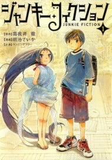

FECHA DE ESTRENO:18 de agosto
Tonikaku Kawaii OVA
Un reconocido leaker japonés confirmó que el lanzamiento del OVA de la adaptación animada del manga Tonikaku Kawaii (TONIKAWA: Over the Moon For You), ha sido programado en Japón para el próximo 18 de agosto.
FECHA DE ESTRENO:4 de julio
Re-Main
Minato Kiyoumizu dejó de jugar al water polo luego de un incidente en su tercer año de primaria. Pero luego de pasar a la secundaria, intenta regresar al deporte, y se une a sus amigos en el equipo.Pero no todo puede ser un camino de rosas, y el equipo tendrá que resolver unos cuantos problemas

FECHA DE ESTRENO:10 de septiembre
Shika no Ou: Yuna to Yakusoku no Tabi
Van es un esclavo que trabaja en las minas. Luego de un ataque de perros salvajes, logra escapar, pero descubre que todos en las minas sufren una enfermedad misteriosa. Hossal es un médico que quiere investigar esta enfermedad, ya que solo parece afectar a personas inmigrantes, y debe estudiar a una familia que sobrevivió a la misma.
FECHA DE ESTRENO: Julio
Seirei Gensouki
Haruto es un joven que falleció antes de reunirse con su amiga de la infancia que llevaba años desaparecida, mientras que Rio, un joven que vive en los barrios más bajos, quiere vengarse por la muerte de su madre. Los recuerdos de Haruto entran al cuerpo de Rio luego de un incidente, y sus consciencias conviven en un nuevo mundo.Seirei Gensōki es una serie de novelas ligeras japonesas escritas por Yuri Kitayama e ilustradas por Riv.